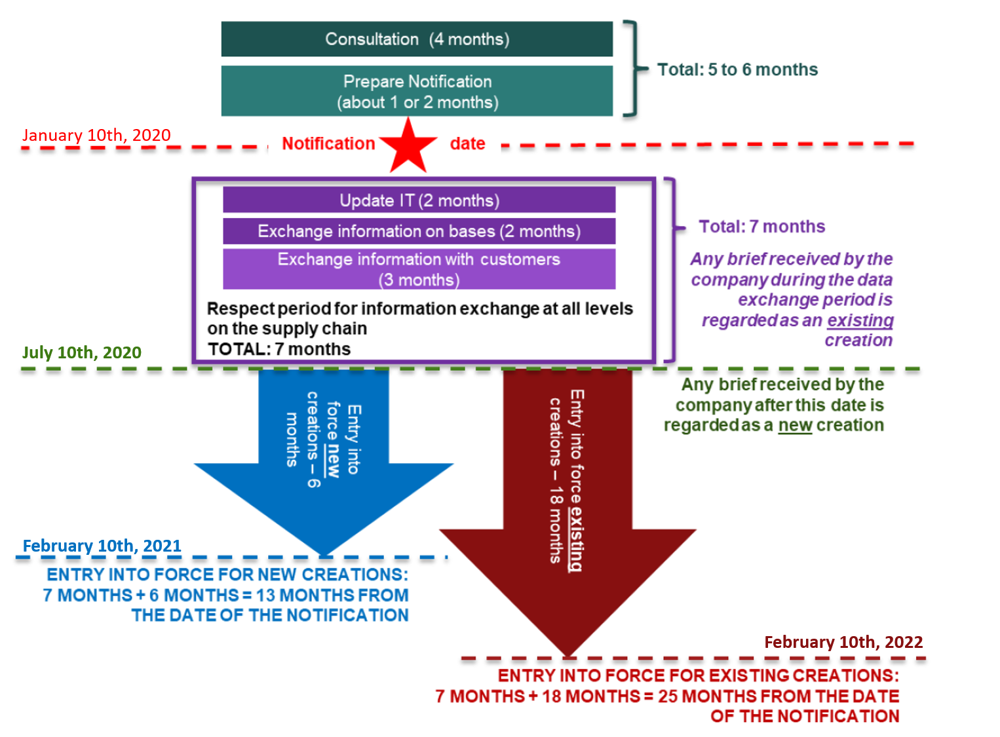

Notre site internet utilise des cookies à des fins de statistiques, de perfomances et de sécurité. Ces données anonymes nous permettent de vous offrir une expérience de navigation optimale. Vous pouvez toutefois désactiver les cookies dans les paramètres de votre navigateur.
Our website is using cookies for statistics, performance and security. These anonymous data allow us to give you an optimal navigation experience. You still can disable the cookies in your navigator’s parameters.
TOUT SAVOIR SUR L'IFRA ALL YOU NEED TO KNOW ABOUT THE IFRA
Qu’est-ce que l’IFRA et quel est son rôle ? What is the IFRA and what is its aim ?
Crée en 1973 l’IFRA (International Fragrance Association) a pour objectif principal de représenter les intérêts et la voix de l’industrie des parfums à travers le monde. Ainsi, au niveau mondial, cette organisation promeut la sécurité et les avantages des produits de l'industrie des parfums par le biais d'un dialogue entre les différentes parties prenantes de l’industrie. Created in 1973, the IFRA (International Fragrance Association) wants to represent the interests and the voice of the perfume industry throughout the world. Then, this organization promotes perfume products security and advantages on a global scale, by making the link between the different entities of the perfume industry.
L’IFRA travaille en lien avec l’RIFM (Research Institute for Fragrance Materials) afin de garantir la sécurité des produits de l’industrie. En effet, lorsqu’à la suite de nombreuses études, l’RIFM déclare qu’un ingrédient est susceptible d’être dangereux pour l’Homme, l’IFRA édite un standard pour cet ingrédient. Ce standard sera publié au sein d’un amendement. The IFRA works closely to the RIFM (Research Institute for Fragrance Materials) to guarantee safe perfume products. In fact, after numerous studies, if the RIFM declares that one ingredient may be dangerous if used, the IFRA is editing a standard for this ingredient. This standard will be published in an amendment.
A ce jour, nous sommes dans une année de transition entre le 48th et le 49th amendement (c’est pour cette raison que les ingrédients réglementés de ScenTree possèdent 2 onglets dans leur partie « IFRA »). A travers ces évolutions, c'est l'intégralité de l'industrie de la parfumerie qui doit donc s'adapter afin de garantir toujours plus de sécurité à ses consommateurs. Today, the transition between the 48th and the 49th amendements is being made (this is why regulated ingredients found on ScenTree have two tabs, for each amendement). This means that regulation is evolving throughout the years, and perfumes on the market have to adapt…
En savoir plus sur les standards : Improve your knowledge around standard
Les standards de l’IFRA peuvent être de 3 types : 3 types of standards are distinguished :
- Standard Restrictif : Restrictive Standards : Ce type de standard définit des concentrations limites à ne pas dépasser dans un produit fini. Ces concentrations dépendent majoritairement du type de produit fini, comme nous le verrons dans le point suivant. This type of standards defines limits of use for some ingredients, not to overpass in the finished product. These concentrations mostly depend on the type of finished product.
- Standard Prohibitif : Prohibitive Standards : Ce type de standard interdit l’utilisation d’un produit car le cadre d’une composition parfumée. A ce jour, prêt de 66 ingrédients ou groupes d’ingrédients interdits. This type of standard prohibits the use of an ingredient in a perfume product. Today, 66 ingredients or groups of ingredients are prohibited.
- Standard Spécificatif : Specificative Standards : Ce type de standard apporte des précisions sur la qualité (pureté, processus d’extraction ou de production etc etc) This type of standard gives precisions over quality (purity, extraction or production process etc.)
A noter que tous les produits de consommation parfumés entrent dans le champ d'application des normes IFRA, à l'exception des produits qui ne sont manifestement pas couverts par les évaluations de sécurité RIFM, tels que les dispositifs médicaux, les médicaments prescrits, les applications de l'aromathérapie ou encore les produits de consommation utilisés dans le cadre professionnel (par exemple, les shampoings appliqués dans les salons de coiffure, les désinfectants pour les mains appliqués dans les hôpitaux, etc.) It is to be notes that every single type of perfumed products is registered by the IFRA, except some of them that are not covered by the RIFM safety assessments, as medical products, prescribed medication, aromatherapy application or products used in a professional environment (for example, shampoos to the hairdressers, hand disinfectants applied at hospitals, etc.)
Qu’elles sont les nouveautés de l’amendement 49th ? What is new about the 49th amendment ?
Les principales nouveautés de cet amendement par rapport au précédent concernent l'introduction de plusieurs améliorations de la méthodologie d'évaluation des risques. (Révision de la méthodologie de l'évaluation quantitative des risques pour les ingrédients de parfumerie – QRA2). Cette amélioration s’appuie sur une nouvelle façon d'évaluer la toxicité systémique basée sur un modèle d'exposition globale. The main news from this amendment, compared to the previous one are concerning many improvements of the risk assessment methodology : modification of the quantitative risk assessment methodology for perfume ingredients – QRA2 (Quantitative Risk Assessment). This improvement concerns a new method for evaluating the systemic toxicity, based on global exposure to an ingredient.
Pour plus de détails sur ce point, veuillez consulter le site web de l'IDEA (http://ideaproject.info/ ) et les publications concernant le QRA2 (www.fragrancematerialsafetyresource.elsevier.com/). For more details, please go on the IDEA website (http://ideaproject.info/) and read publications concerning the QRA2 (www.fragrancematerialsafetyresource.elsevier.com/).
Cela a donc eu pour conséquence : As a consequence :
- L'établissement de catégories différentes par rapport au QRA1 (48th). Ainsi, toutes les normes, nouvelles et existantes, comprennent maintenant 12 catégories EQR2 au lieu de 11 auparavant. Different product categories were established, regarding the QRA1 (48th amendment). Then, every new or existing standards are mentioning 12 QRA2 categories, instead of 11.
- [POINT NON TRADUIT EN FR] In the new amendment, categories previously based on an ingredient’s systemic toxicity have been renewed, this time according to combined exposures. Previous categories (QRA1) have been harmonized with the new ones (QRA2). Moreover, new concentration limits have been tested with the previous methodology, using systemic toxicity. Eventually, the limit of use defined in the 49th amendment corresponds to the weakest concentration obtained for one assessment, and the other.
| Catégories | Produits Finis |
|---|---|
| 1 | Produit pour les lèvres |
| 2 | Déodorants et antoperspirants |
| 3 | Produits hydroalcoliques pour peaux rasées (eaux de toilette, parfums, produits pour les yeux, crèmes et baumes pour le visage, tampons) |
| 4 | Produits hydroalcoliques pour peaux non rasées (eaux de toilette, papiers parfumés, parfums, aide à la coiffe, sprays pour les cheveux, crèmes, lotions, gels et huiles pour le corps, produits pour les pieds, crèmes parfumantes) |
| 5 | Crèmes pour les mains |
| 6 | Produits buccodentaires |
| 7 | Lingettes intimes, lingettes bébé, insecticides pour la peau |
| 8 | Démaquillants, aide à la coiffe sans spray, produits pour les ongles, poudres et talcs |
| 9 | Produits rincés (savons liquides, dépilatoires, après-shampoings, shampoings, soins visage, après rasage, mousse à raser, gels douches, produits pour le corps, serviettes hygiéniques, autres aérosols) |
| 10 | Produits ménagers (lessives en poudre et liquides, autres détergents, produits de lavage à sec, assouplissants, produits de vaisselle à la main, nettoyant pour sols, shampoings pour animaux, couches, lingettes pour toilettes) |
| 11 | Produits sans contact avec la peau (désodorisants, blocs pour toilette, insecticides, baton d'encens, objets en plastique, bougies, essence, peinture, cire pour le sol, produits pour lave-vaisselle, parfums de linge, sachets parfumants, cirage, litiaires, sprays pour animaux, soins textiles, eaux parfumantes pour repassage) |
Pour en savoir d’avantage sur les spécificités de chacunes de ces categories, nous vous invitons à vous référer aux Guidance for the use of Ifra Standard To get to know more about these categories, please refer to the Guidance for the use of IFRA Standards
Afin que l’ensemble de l’industrie soit en mesure d’assurer la transition avec le nouvel amendement, l’IFRA a également défini une timeline permettant à chacun de travailler sereinement : So that the industry gets the time to make the transition between the oldest and the newest amendments, the IFRA delivered a time line to able every company to work serenely :

Pour en savoir d'avantage sur l'impact de l'IFRA et sur les changements du 49ème amendement sur vos produits, nous vous invitons à vous rapprocher de votre service réglementaire ou de la société de compositons de vos parfums To find out more about the impact of IFRA and the changes of the 49th amendment on your products, we invite you to contact your regulatory department or your fragrance creation company.